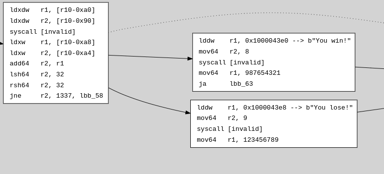
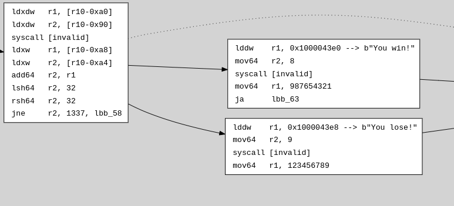

Control Flow Graph (CFG)
Sol-azy can extract a static control flow graph (CFG) from a compiled Solana eBPF program.
The output is a Graphviz-compatible .dot file representing function-level control flow between basic blocks.
This is useful for:
- Visualizing branching behavior
- Locating unreachable code
- Detecting loop structures
- Understanding high-level logic without source code
Overview
The CFG is generated via:
#![allow(unused)] fn main() { pub fn export_cfg_to_dot( program: &[u8], analysis: &mut Analysis, path: impl AsRef<Path>, reduced: bool, only_entrypoint: bool, ) -> std::io::Result<()> }
Sol-azy uses the static Analysis engine to:
- Identify all functions
- Segment them into basic blocks
- Record all dominators and edges
- Render each function as a
subgraph clusterin Graphviz.dotsyntax
Filtering the graph
--reduced: excludes library functions that appear before the program’s entrypoint, reducing noise.--only-entrypoint: includes only the function where execution starts, allowing for very focused manual exploration (e.g., withdotting).
Structure of the Graph
Each basic block is rendered as a node with label:
lbb_<id> [label=<<table>...</table>>];
- The instruction list is printed line-by-line
- If a string is found via
LD_DW_IMM+MOV64_IMM, it’s appended with:--> b"..." - Long strings are truncated
Resolving Edges
Edges are derived from instruction flow and jump destinations:
- Conditional jumps produce two outgoing edges
- Unconditional jumps produce one
- Return or syscall ends a block
- Dominator relationships (parent-child) are shown with dotted arrows (
style=dotted; arrowhead=none)
Detailed behavior:
Sol-azy draws edges based on:
jne,jeq, etc. → conditional edgesja(jump always) → unconditionalcall,exit, andret→ no outgoing edgedominator_parent→ rendered with:lbb_A -> lbb_B [style=dotted; arrowhead=none];
Example (DOT snippet)
Here’s a raw .dot snippet generated by Sol-azy:
lbb_58 [label=<<table border="0" cellborder="0" cellpadding="3">
<tr><td align="left">lddw</td><td align="left">r1, 0x1000043e8 --> b"You lose!"</td></tr>
<tr><td align="left">mov64</td><td align="left">r2, 9</td></tr>
<tr><td align="left">syscall</td><td align="left">[invalid]</td></tr>
<tr><td align="left">mov64</td><td align="left">r1, 123456789</td></tr>
</table>>];
Graphviz will render this as a block node with a 4-row table inside.
How Sol-azy Generates It
CFG generation is implemented in:
#![allow(unused)] fn main() { pub fn export_cfg_to_dot( program: &[u8], analysis: &mut Analysis, path: impl AsRef<Path>, ) }
It walks:
- The
analysis.functionsmap - Each function’s set of
cfg_nodes - Each node’s instructions (via
analysis.instructions) - Control destinations (e.g.,
jne,ja,call) - Dominator relationships (
cfg_node.dominator_parent)
The layout is rendered using Graphviz-style clusters:
subgraph cluster_42 {
label="function_name";
lbb_42 [ ... ];
}
Strings from .rodata
CFG generation is enhanced by the same string resolution logic used in disassembly:
#![allow(unused)] fn main() { fn get_string_repr( program: &[u8], insn: &Insn, next_insn: Option<&Insn> ) -> String }
This makes string loads from .rodata visible directly in the graph, so when an instruction like::
lddw r1, 0x1000043e8
is followed by:
mov64 r2, 9
Sol-azy uses this to resolve:
b"You lose!"
It is rendered like this:
<td align="left">r1, 0x1000043e8 --> b"You lose!"</td>
This makes constant decoding directly visible in the graph.
Rendering the Graph
Once cfg.dot is generated, use:
dot -Tsvg cfg.dot -o cfg.svg
xdot cfg.dot # for interactive navigation
⚠️ For very large programs, even the
--reducedversion of the CFG can take significant time to generate due to the size and complexity of the bytecode being analyzed and rendered bydot.
Function Grouping
Each function is placed into a subgraph cluster for clarity. This helps:
- Separate function-level CFGs
- Navigate large programs
- Find easily the main part
Entrypoint Example:
subgraph cluster_3 {
label="entrypoint";
tooltip=lbb_3;
lbb_3 [label=<<table border="0" cellborder="0" cellpadding="3"><tr><td align="left">mov64</td><td align="left">r2, r1</td></tr><tr><td align="left">mov64</td><td align="left">r1, r10</td></tr><tr><td align="left">add64</td><td align="left">r1, -96</td></tr><tr><td align="left">call</td><td align="left">function_308</td></tr></table>>];
lbb_7 [label=<<table border="0" cellborder="0" cellpadding="3"><tr><td align="left">ldxdw</td><td align="left">r7, [r10-0x48]</td></tr><tr><td align="left">ldxdw</td><td align="left">r8, [r10-0x58]</td></tr><tr><td align="left">ldxdw</td><td align="left">r1, [r10-0x38]</td></tr><tr><td align="left">mov64</td><td align="left">r2, 8</td></tr><tr><td align="left">jgt</td><td align="left">r2, r1, lbb_91</td></tr></table>>];
lbb_91 [label=<<table border="0" cellborder="0" cellpadding="3"><tr><td align="left">lddw</td><td align="left">r1, 0x1000043f4 --> b"Not enough data. Need two u32 values."</td></tr><tr><td align="left">mov64</td><td align="left">r2, 37</td></tr><tr><td align="left">syscall</td><td align="left">[invalid]</td></tr><tr><td align="left">mov64</td><td align="left">r1, 2</td></tr><tr><td align="left">stxw</td><td align="left">[r10-0xc8], r1</td></tr><tr><td align="left">mov64</td><td align="left">r1, r10</td></tr><tr><td align="left">add64</td><td align="left">r1, -200</td></tr><tr><td align="left">call</td><td align="left">function_554</td></tr></table>>];
lbb_100 [label=<<table border="0" cellborder="0" cellpadding="3"><tr><td align="left">mov64</td><td align="left">r6, r0</td></tr><tr><td align="left">jeq</td><td align="left">r7, 0, lbb_107</td></tr></table>>];
lbb_12 [label=<<table border="0" cellborder="0" cellpadding="3"><tr><td align="left">ldxdw</td><td align="left">r1, [r10-0x40]</td></tr><tr><td align="left">ldxw</td><td align="left">r2, [r1+0x0]</td></tr><tr><td align="left">stxw</td><td align="left">[r10-0xa8], r2</td></tr><tr><td align="left">ldxw</td><td align="left">r1, [r1+0x4]</td></tr><tr><td align="left">stxw</td><td align="left">[r10-0xa4], r1</td></tr><tr><td align="left">mov64</td><td align="left">r1, 0</td></tr><tr><td align="left">stxdw</td><td align="left">[r10-0x40], r1</td></tr><tr><td align="left">lddw</td><td align="left">r1, 0x100004610 --> b"\x00\x00\x00\x00\xd0C\x00\x00\x08\x00\x00\x…</td></tr><tr><td align="left">stxdw</td><td align="left">[r10-0x60], r1</td></tr><tr><td align="left">mov64</td><td align="left">r1, 2</td></tr><tr><td align="left">stxdw</td><td align="left">[r10-0x58], r1</td></tr><tr><td align="left">stxdw</td><td align="left">[r10-0x48], r1</td></tr><tr><td align="left">mov64</td><td align="left">r1, r10</td></tr><tr><td align="left">add64</td><td align="left">r1, -136</td></tr><tr><td align="left">stxdw</td><td align="left">[r10-0x50], r1</td></tr><tr><td align="left">mov64</td><td align="left">r1, r10</td></tr><tr><td align="left">add64</td><td align="left">r1, -164</td></tr><tr><td align="left">stxdw</td><td align="left">[r10-0x78], r1</td></tr><tr><td align="left">lddw</td><td align="left">r1, 0x100004210 --> b"\xbf#\x00\x00\x00\x00\x00\x00a\x11\x00\x00\…</td></tr><tr><td align="left">stxdw</td><td align="left">[r10-0x70], r1</td></tr><tr><td align="left">stxdw</td><td align="left">[r10-0x80], r1</td></tr><tr><td align="left">mov64</td><td align="left">r1, r10</td></tr><tr><td align="left">add64</td><td align="left">r1, -168</td></tr><tr><td align="left">stxdw</td><td align="left">[r10-0x88], r1</td></tr><tr><td align="left">mov64</td><td align="left">r1, r10</td></tr><tr><td align="left">add64</td><td align="left">r1, -160</td></tr><tr><td align="left">mov64</td><td align="left">r2, r10</td></tr><tr><td align="left">add64</td><td align="left">r2, -96</td></tr><tr><td align="left">call</td><td align="left">function_858</td></tr></table>>];
lbb_43 [label=<<table border="0" cellborder="0" cellpadding="3"><tr><td align="left">ldxdw</td><td align="left">r1, [r10-0xa0]</td></tr><tr><td align="left">ldxdw</td><td align="left">r2, [r10-0x90]</td></tr><tr><td align="left">syscall</td><td align="left">[invalid]</td></tr><tr><td align="left">ldxw</td><td align="left">r1, [r10-0xa8]</td></tr><tr><td align="left">ldxw</td><td align="left">r2, [r10-0xa4]</td></tr><tr><td align="left">add64</td><td align="left">r2, r1</td></tr><tr><td align="left">lsh64</td><td align="left">r2, 32</td></tr><tr><td align="left">rsh64</td><td align="left">r2, 32</td></tr><tr><td align="left">jne</td><td align="left">r2, 1337, lbb_58</td></tr></table>>];
lbb_58 [label=<<table border="0" cellborder="0" cellpadding="3"><tr><td align="left">lddw</td><td align="left">r1, 0x1000043e8 --> b"You lose!"</td></tr><tr><td align="left">mov64</td><td align="left">r2, 9</td></tr><tr><td align="left">syscall</td><td align="left">[invalid]</td></tr><tr><td align="left">mov64</td><td align="left">r1, 123456789</td></tr></table>>];
lbb_52 [label=<<table border="0" cellborder="0" cellpadding="3"><tr><td align="left">lddw</td><td align="left">r1, 0x1000043e0 --> b"You win!"</td></tr><tr><td align="left">mov64</td><td align="left">r2, 8</td></tr><tr><td align="left">syscall</td><td align="left">[invalid]</td></tr><tr><td align="left">mov64</td><td align="left">r1, 987654321</td></tr><tr><td align="left">ja</td><td align="left">lbb_63</td></tr></table>>];
lbb_63 [label=<<table border="0" cellborder="0" cellpadding="3"><tr><td align="left">stxdw</td><td align="left">[r10-0x68], r1</td></tr><tr><td align="left">lddw</td><td align="left">r1, 0x100004630 --> b"\x00\x00\x00\x00\xd8C\x00\x00\x08\x00\x00\x…</td></tr><tr><td align="left">stxdw</td><td align="left">[r10-0x60], r1</td></tr><tr><td align="left">mov64</td><td align="left">r1, 1</td></tr><tr><td align="left">stxdw</td><td align="left">[r10-0x58], r1</td></tr><tr><td align="left">stxdw</td><td align="left">[r10-0x48], r1</td></tr><tr><td align="left">mov64</td><td align="left">r1, r10</td></tr><tr><td align="left">add64</td><td align="left">r1, -160</td></tr><tr><td align="left">stxdw</td><td align="left">[r10-0x50], r1</td></tr><tr><td align="left">lddw</td><td align="left">r1, 0x100004238 --> b"\xbf#\x00\x00\x00\x00\x00\x00y\x11\x00\x00\…</td></tr><tr><td align="left">stxdw</td><td align="left">[r10-0x98], r1</td></tr><tr><td align="left">mov64</td><td align="left">r1, r10</td></tr><tr><td align="left">add64</td><td align="left">r1, -104</td></tr><tr><td align="left">stxdw</td><td align="left">[r10-0xa0], r1</td></tr><tr><td align="left">mov64</td><td align="left">r6, 0</td></tr><tr><td align="left">stxdw</td><td align="left">[r10-0x40], r6</td></tr><tr><td align="left">mov64</td><td align="left">r1, r10</td></tr><tr><td align="left">add64</td><td align="left">r1, -136</td></tr><tr><td align="left">mov64</td><td align="left">r2, r10</td></tr><tr><td align="left">add64</td><td align="left">r2, -96</td></tr><tr><td align="left">call</td><td align="left">function_858</td></tr></table>>];
lbb_86 [label=<<table border="0" cellborder="0" cellpadding="3"><tr><td align="left">ldxdw</td><td align="left">r1, [r10-0x88]</td></tr><tr><td align="left">ldxdw</td><td align="left">r2, [r10-0x78]</td></tr><tr><td align="left">syscall</td><td align="left">[invalid]</td></tr><tr><td align="left">jeq</td><td align="left">r7, 0, lbb_107</td></tr></table>>];
lbb_90 [label=<<table border="0" cellborder="0" cellpadding="3"><tr><td align="left">ja</td><td align="left">lbb_102</td></tr></table>>];
lbb_102 [label=<<table border="0" cellborder="0" cellpadding="3"><tr><td align="left">add64</td><td align="left">r8, 16</td></tr><tr><td align="left">ja</td><td align="left">lbb_109</td></tr></table>>];
lbb_109 [label=<<table border="0" cellborder="0" cellpadding="3"><tr><td align="left">ldxdw</td><td align="left">r1, [r8+0x0]</td></tr><tr><td align="left">ldxdw</td><td align="left">r2, [r8-0x8]</td></tr><tr><td align="left">ldxdw</td><td align="left">r3, [r2+0x0]</td></tr><tr><td align="left">add64</td><td align="left">r3, -1</td></tr><tr><td align="left">stxdw</td><td align="left">[r2+0x0], r3</td></tr><tr><td align="left">jne</td><td align="left">r3, 0, lbb_118</td></tr></table>>];
lbb_115 [label=<<table border="0" cellborder="0" cellpadding="3"><tr><td align="left">ldxdw</td><td align="left">r3, [r2+0x8]</td></tr><tr><td align="left">add64</td><td align="left">r3, -1</td></tr><tr><td align="left">stxdw</td><td align="left">[r2+0x8], r3</td></tr></table>>];
lbb_118 [label=<<table border="0" cellborder="0" cellpadding="3"><tr><td align="left">ldxdw</td><td align="left">r2, [r1+0x0]</td></tr><tr><td align="left">add64</td><td align="left">r2, -1</td></tr><tr><td align="left">stxdw</td><td align="left">[r1+0x0], r2</td></tr><tr><td align="left">jne</td><td align="left">r2, 0, lbb_104</td></tr></table>>];
lbb_122 [label=<<table border="0" cellborder="0" cellpadding="3"><tr><td align="left">ldxdw</td><td align="left">r2, [r1+0x8]</td></tr><tr><td align="left">add64</td><td align="left">r2, -1</td></tr><tr><td align="left">stxdw</td><td align="left">[r1+0x8], r2</td></tr><tr><td align="left">ja</td><td align="left">lbb_104</td></tr></table>>];
lbb_104 [label=<<table border="0" cellborder="0" cellpadding="3"><tr><td align="left">add64</td><td align="left">r8, 48</td></tr><tr><td align="left">add64</td><td align="left">r7, -1</td></tr><tr><td align="left">jne</td><td align="left">r7, 0, lbb_109</td></tr></table>>];
lbb_107 [label=<<table border="0" cellborder="0" cellpadding="3"><tr><td align="left">mov64</td><td align="left">r0, r6</td></tr><tr><td align="left">exit</td></tr></table>>];
}

Full Example (Visual)
Here’s what a real Sol-azy-generated CFG can look like:
- Each rectangle = basic block
- Arrows = jumps, calls, or branches
- Dashed arrows = dominator links
Code example:
#![allow(unused)] fn main() { use solana_program::{ account_info::AccountInfo, entrypoint, entrypoint::ProgramResult, pubkey::Pubkey, msg, }; entrypoint!(process_instruction); fn win() -> u64 { msg!("You win!"); 987654321 } fn loose() -> u64 { msg!("You lose!"); 123456789 } pub fn process_instruction( _program_id: &Pubkey, _accounts: &[AccountInfo], instruction_data: &[u8], ) -> ProgramResult { if instruction_data.len() < 8 { msg!("Not enough data. Need two u32 values."); return Err(solana_program::program_error::ProgramError::InvalidInstructionData); } let a = u32::from_le_bytes(instruction_data[0..4].try_into().unwrap()); let b = u32::from_le_bytes(instruction_data[4..8].try_into().unwrap()); msg!("Inputs: {} + {}", a, b); let result = if a + b == 1337 { win() } else { loose() }; msg!("Result: {}", result); Ok(()) } }
CFG recovered from bytecode:
 
